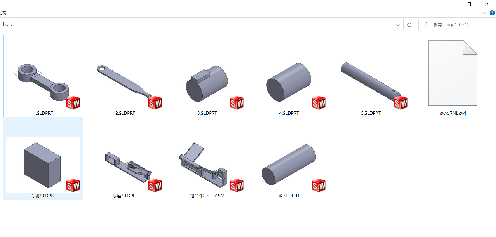
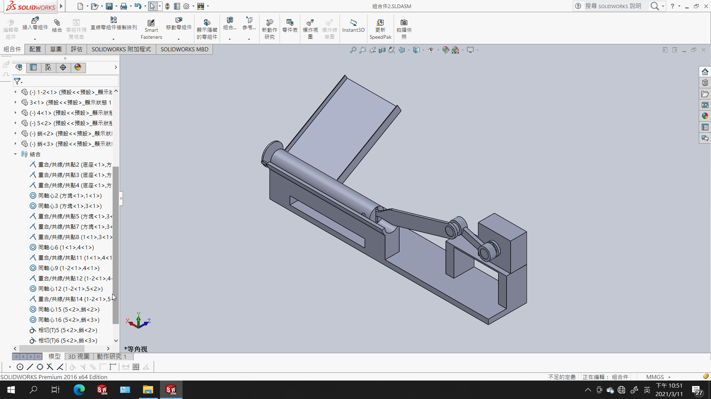
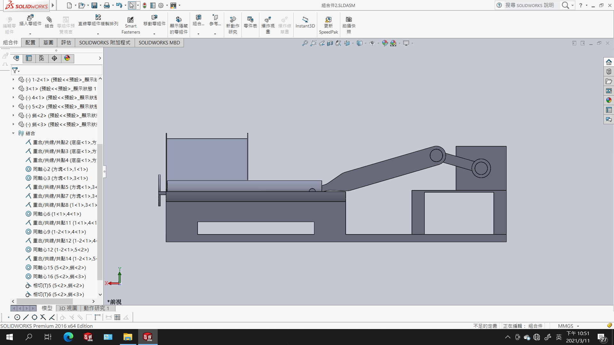
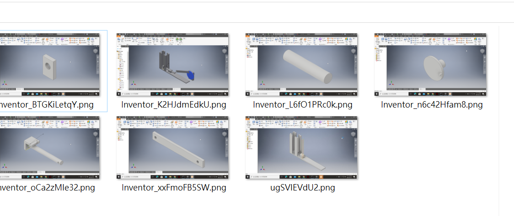

協同產品設計實習 報告
stage1-bg12
成員40823202,40823203
機構原理
利用直線運動機構分為精確直線運動機構和近似直線運動機構兩類。其中精確直線運動機構的設計思想主要有兩種：一種是利用幾何中的反演變換，把連杆末端的圓弧路徑反演為直線，用機械反演器可以完成這一功能；另一種則是通過兩個不平行的連杆結構，把路徑限制在兩個平面的交線。近似直線運動機構則是通過多個杆件實現自由度為1的連接，調整杆件的長度使得一點的運動軌跡中包含一段近似直的線段。
動機
在系館7樓垃圾桶有時候會看到沒壓扁的鋁罐很佔垃圾桶的空間，所以我們設計此機構希望可以減少此類麻煩。
第一版-零件圖

第一版-組合圖


因為考慮到鋁罐從斜面上滾落時，會直接摔出，所以繼續討論改變的方法。
第二版-零件圖+組合圖

模擬之後發現有些零件會噴掉，所以把零件和其尺寸稍作調整。